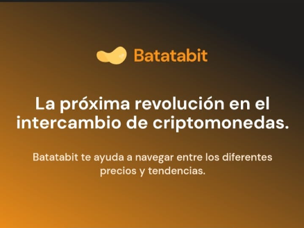
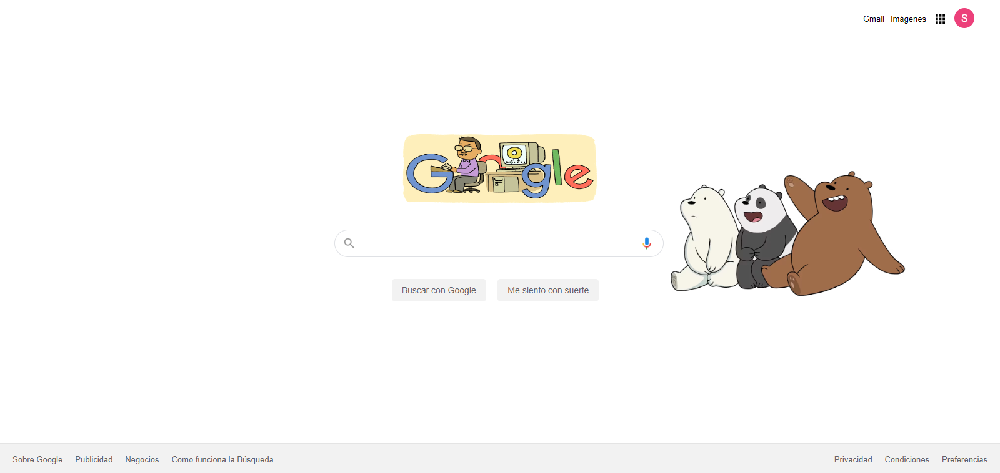
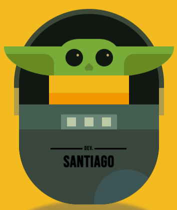

<!DOCTYPE html >
<html> <!DOCTYPE html>
  <html lang="en">
    <head>
      <meta charset="UTF-8">
      <meta http-equiv="X-UA-Compatible" content="IE=edge">
      <meta name="viewport" content="width=device-width, initial-scale=1.0">
      <link rel="icon" href="/assets/img/profile_me.jpg">
      <link rel="stylesheet" href="../css/main.css">
      <link rel="stylesheet" href="../css/font/flaticon.css">
      <link rel="preconnect" href="https://fonts.googleapis.com">
      <link rel="preconnect" href="https://fonts.gstatic.com" crossorigin>
      <link rel="stylesheet" href="https://fonts.googleapis.com/css2?family=Pacifico&amp;family=Roboto+Mono:wght@400;500;700&amp;family=Roboto+Slab:wght@400;700&amp;family=Roboto:wght@100;400;500;700;900&amp;display=swap">
      <script src="https://kit.fontawesome.com/fcc4e98093.js" crossorigin="anonymous"></script>
      <script src="../js/menu.js" defer></script>
      <script src="../js/ligthbox.js" defer></script>
      <title>Dev Santiago Montoya</title>
    </head>
  </html>
  <body>
    <header> 
      <section class="header-icons-container"> 
        <div class="nav-logo-container-items"> <a href="../html/index.html"></a><a href="../html/index.html">Dev. Santiago</a></div>
        <nav class="menu-navegacion"> <a href="../html/index.html">Inicio</a><a href="../html/perfil.html">Perfil</a><a href="../html/blogs.html">Proyectos</a><a href="#">Blog</a></nav>
      </section>
    </header>
    <main class="blogs-main"> 
      <section class="blogs-news-container"> 
        <div class="grid-container blogs-main-new"> 
          <div class="blogs-news-img-container"> </div>
          <div class="blogs-news-info-container"> 
            <h2>Mis Proyectos </h2>
            <p>¡Despierta tu curiosidad y adéntrate en mi emocionante viaje como programador junior en el fascinante mundo del front-end! 🌟💻 Descubre mis desafíos diarios, mi pasión por la creación y los logros que he obtenido en este apasionante campo. ¡Te sorprenderás de lo que se puede lograr con determinación y aprendizaje constante!✨🔥</p>
          </div>
        </div>
        <div class="grid-container blogs-main-tools"> 
          <div class="tools"> 
            <h2>Programas y herramientas que manejo</h2>
            <div class="tools-icons"><i class="fa-brands fa-html5" aria-hidden="true"></i><i class="fa-brands fa-css3-alt" aria-hidden="true"></i><i class="fa-brands fa-square-js" aria-hidden="true"></i><i class="fa-brands fa-sass" aria-hidden="true"></i><i class="fa fa-github" aria-hidden="true"></i><i class="fa-brands fa-git-alt" aria-hidden="true"></i></div>
          </div>
        </div>
      </section>
      <section class="blogs-posts-container"> 
        <div class="grid-container"> 
          <h3>Últimos proyectos </h3>
          <hr>
            <article class="post-container"> 
              <p>BatataBit</p>
              <p>Pagina infográfica de la criptomoneda BatataBit, en la que se visualiza los diferentes precios y tendencias. </p><a class="blogs-button" href="https://santi2023.github.io/BatataBit/" target="blank">Ver más</a>
            </article>
            <article class="post-container"> 
              <p>Google Clone</p>
              <p>Clon de la pagina principal del buscador mas popular que es Google, en la que veremos un buen uso de los displays. Solo disponible para desktop.</p><a class="blogs-button" href="https://santi2023.github.io/Google_Clone.github.io/" target="blank">Ver más</a>
            </article>
            <article class="post-container"> 
              <p>Salva el Planeta</p>
              <p>Conoce el impacto del cambio climático y como puedes contribuir desde casa con la protección y conservación del medio ambiente. Disponible solo para desktop</p><a class="blogs-button" href="https://santi2023.github.io/Save_Our_Planet/index.html" target="blank">Ver más</a>
            </article>
            <article class="post-container"> 
              <p>CSS Baby Yoda</p>
              <p>Dibujo hecho con css puro donde puse aprueba mis conocimientos y cumplí con el reto. #DibujarteCSS #CSS #NuncaPararDeAprender #Platzi</p><a class="blogs-button" href="https://santi2023.github.io/Baby_Yoda/" target="blank">Ver más</a>
            </article>
        </div>
      </section>
    </main>
    <footer> 
      <p>Copyright © 2023. All rights reserved.</p>
    </footer>
  </body>
</html>